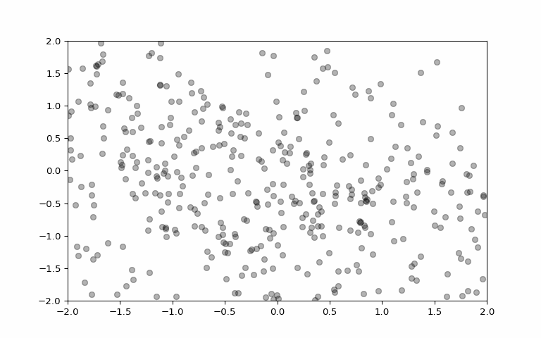

Here is the general idea on how nonequilibrium thermodynamics was used to create an algorithm for generative modelling:
Convert images to a simple noise distribution
Reverse the process by using the distribution to create new images.
To understand how this works, the article titled “The Physics Principle That Inspired Modern AI Art” described the process best. Suppose we have a grayscale image consisting of two pixels, with different grayscale values. If we plot the 2D plot of this, with each axis representing the grayscale values, we get a single point.
If we have let’s say 20 grayscale images consisting of two pixels each and plot the grayscale values in the 2D plot, we notice that some points are closer to each other than other points. Then we can actually use this 2D plot to generate a 2D probability distribution function such that if we want to generate a new image, we just select a point from our distribution function and the result will give us the values of the pixels of our image, which is a combination of all the images from where we got the probability distribution from, with the images that clustered together having the highest similarity.
If we extend this to an actual image, we get an N-D plot depending on the number of pixels of our image, with the simplified explanation still holding true. And the challenge now for researchers is how to generate this complicated probability distribution function.
Pitfall encoutered: Images formed just looked like blobs, but still cool! The general ‘shape’ was there, but in blob form.
Model based on Estimating Gradients of Data Distribution
Instead of estimating the probability distribution of the data, this model estimated the gradient of the distribution. Here is a quick summary of how the model was done:
Perturb image with random Gaussian noise of various magnitude
Use trained neural network to predict the original image using the gradient of the distribution of the noisy images (process looks like the inverse of the plots above).
Pitfall encountered: Though the images predicted are of good quality, the computational time it took was very long.
Denoising Diffusion Probabilistic Models
In this final paper, the two models discussed above were combined. What happens here is that from a noisy blob of data, we get a recognizable image. What happens in this model is that, there is a forward and a backward process.
In the forward process, we introduce an increasing Gaussian noise to all our data. Then we train our model with the data with increasing Gaussian noise.
Here is how the backward process looks like. What happens here is that, the images in our dataset will look like noisy blobs and what the model does is combine these blobs and we sample it. After that, we denoise it slowly to get the original image or our desired image.

Figure 1: Example of backward process
Sample Images with their prompts
A pikachu fine dining with a view to the Eiffel Tower
A pikachu fine dining with a view to the Eiffel Tower
A pikachu fine dining with a view to the Eiffel Tower
A pikachu fine dining with a view to the Eiffel Tower